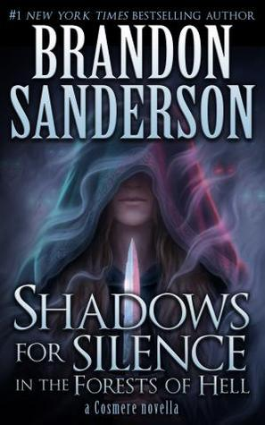

"Shadows for Silence in the Forests of Hell"
- Read on 2015-04-28
- Rating: ️️️️️
- Format: üìñ (50 pages)
Brandon Sanderson continues on as one my favorite authors (if not owning the title outright). He's well known for his overt Fantasy novels, but I feel like he's showing great promise in more subtle Fantasy in these novellas. In this story, as an inhabitant of the island of Hell, the bar and inn-keeper Silence is out (in the forest) to keep up her subversive, deadly, and lucrative activities. Sanderson, again, doesn't disappoint with his talent at story telling. Engaging, descriptive, and once again, a rich world in which you feel immediately immersed. It's actually somewhat amazing how deftly he's able to build such a rich world, especially in so few pages. What a great, albeit short, read.
- Prior: Firefight
- Next: Cryptonomicon